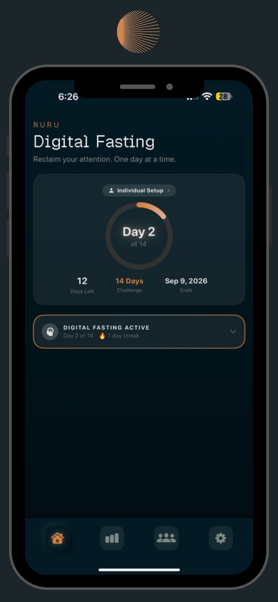
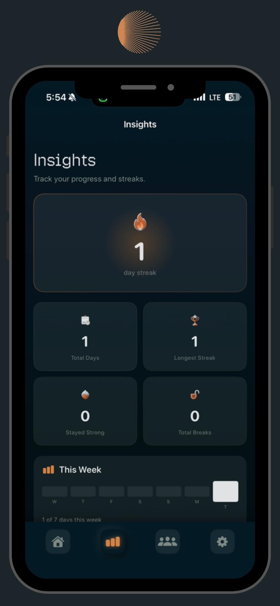
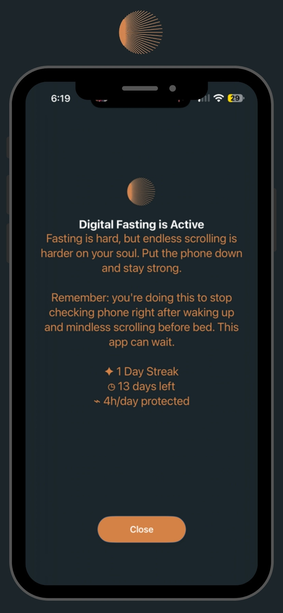
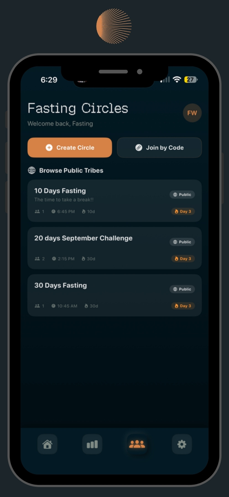
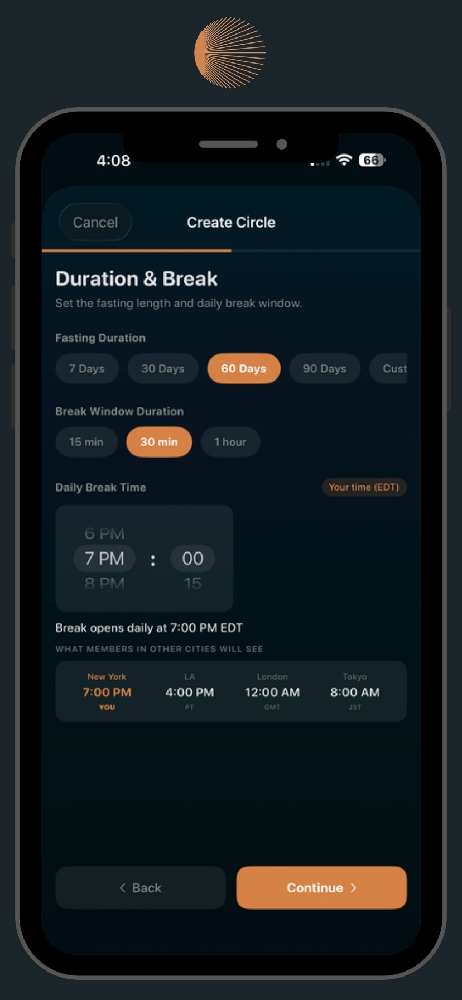
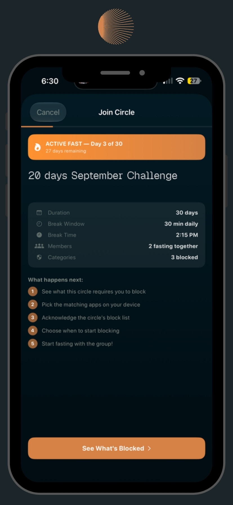
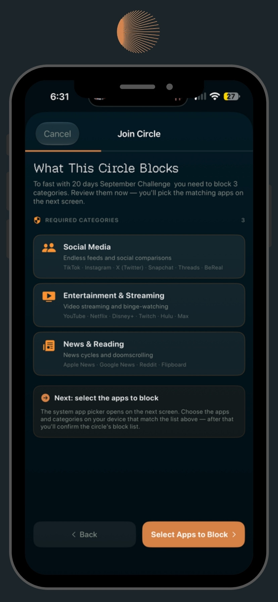
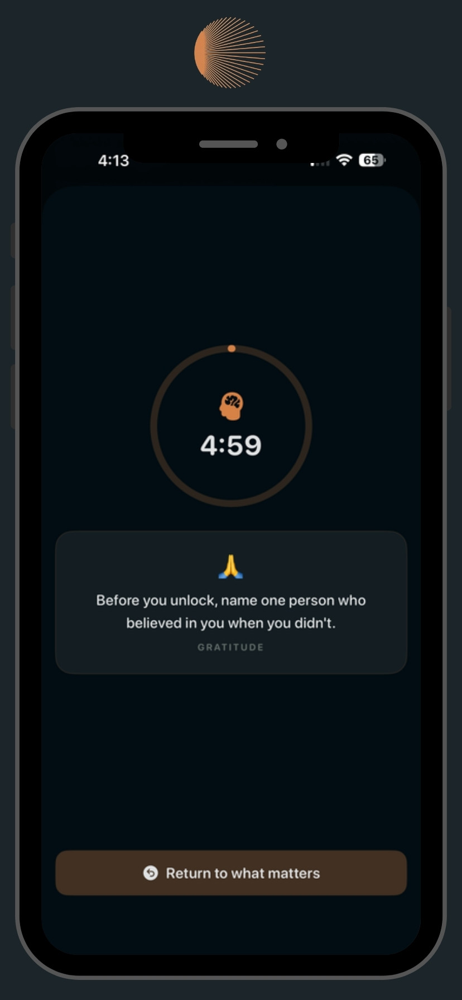

Fasting, for your attention
NURU applies an old idea to a new problem. You choose how long to fast from the apps that pull at you, and NURU holds the line — quietly, with encouragement rather than shame. Do it alone, or join a Circle and fast alongside other people working on the same thing.
Choose your fast
7, 30, 60, or 90 days — or set your own length. NURU tracks the day you are on, the days remaining, and the date you finish.
Block what pulls at you
Social media, entertainment and streaming, news and doomscrolling — pick the categories, then the apps on your device that match.
Fasting Circles
Create a circle or join one by code, or browse public tribes. Fasting together is the difference between a rule and a habit.
A shared break window
Every circle has one daily break — 15 minutes, 30 minutes, or an hour — shown to each member in their own timezone, so a group across four cities still breaks together.
Mindful unlock
Reach for a blocked app and you get a short timer and a question worth sitting with, instead of an instant override.
Insights and streaks
Current streak, longest streak, total days, days you stayed strong, and the breaks you took — laid out week by week.
Encouragement, not shame
Block screens remind you why you started — the streak you are holding, the days left, and the hours you have protected today.
Custom schedules
Block for a whole fasting day, or set specific hours — perfect for work, prayer, study, or the first hour after waking.
A closer look
Swipe or scroll to see more.







